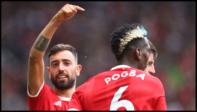
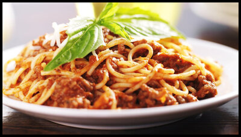
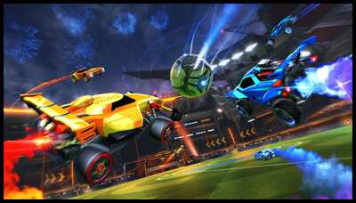

You may be able to tell from my main page that I am a big soccer fan, but more specifically, I am a huge Manchester United fan.
Below are my two favorite players on the team, Paul Pogba and Bruno Fernandes. I would say they are at the top of my list because of how they make the game look so easy and how they play with such elegance and finesse.
Cooking hasn't always been a huge a passion of mine, but once I got into it, I was hooked. There's nothing quite like making something out of nothing and having those around you truly enjoy your dish.
Here's a photo of one of my favorite things to cook and eat, SPAGHETTI!
During my free time, I love to play video games, listen to music, and zone out.
Although I have many favorites from over the years, my current fave would have to be Rocket League. Because of the many different mechanics and skills needed to be learned in order to reach the top tiers of the game, I feel as though I can never get enough of it!
